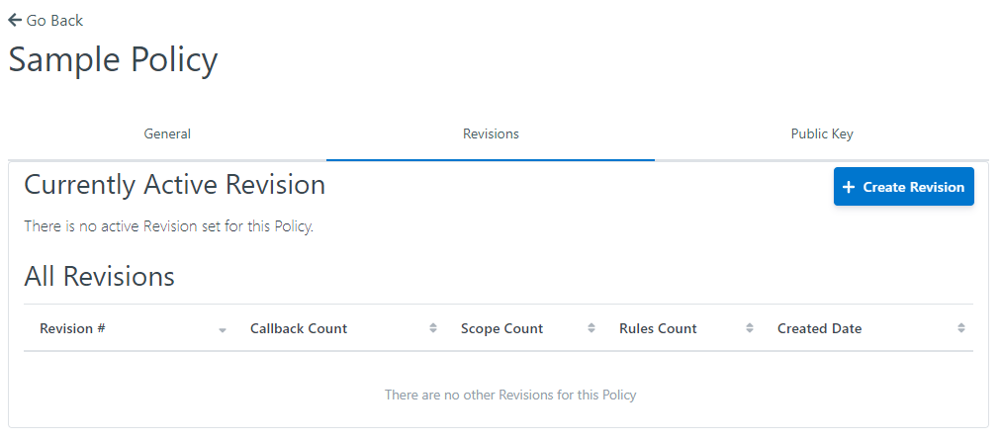
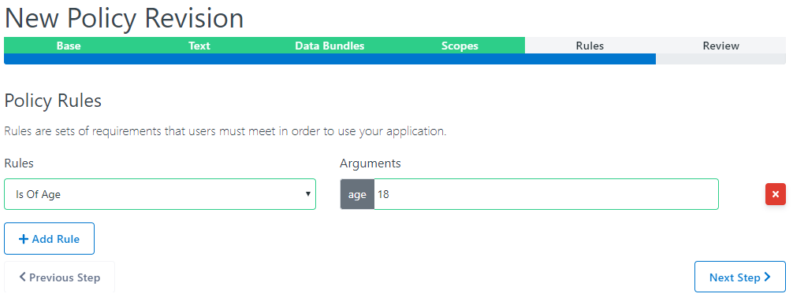

Creating a Service Card¶
Creating a Policy¶
We can create a new Policy by clicking on the Policies tab.

We can click on the Create button on the top right to create a Policy.

The general view allows you to maintain the policy details.
{kind=link}
The Revision view is used to maintain policy revisions. Let go ahead and create a new revivsion for our policy.
Creating a Revision¶

Here, we can either create an entirely new revision or use an old revision as a starting point to base our new revision off of.

Text view allows you to add and update the policy text.

Next, we add callbacks to our policy.

Create scopes for our policy.
{kind=link}
Add rules to our policy. If you want to create a new rule, please refer to Creating a Rule.

This view allows you to review your revision and comfirm your changes. Here is where you can make the revision active.
Creating an Application¶
Now, we must create an application.

We can manage applications by clicking on the Applications tab.

Add the application details and hit create.

You will land on the general tab. Here you are able to maintain your new application.

This view allows you to add service cards you your application. If you want to create a new service card, please refer to Creating a Service Card

Give your application a policy in the policy view. If you want to create a new policy, please refer to Creating a Policy.

Finally, you are abe to add the Service Providers SAML metadata through this view.
Creating a Service Card¶
Service Cards allows administrators to view all service cards that have been created in the system.
We can create a new service card by clicking on the Service Cards tab.

We can click on the Create button on the top right to create a new service

The Details tab allows an you add general information about the service card. (Title, service type, service description and status of pilot mode)

In the Tasks view, you can opotionally add task to your service card.

Add a Policy to your service card. Please refer to Creating a Policy section to view how to create a new policy.


Finally, review your service card and click create when done.
Creating a Rule¶
Rules define a specific set of requirements that users must meet in order to use the policy.
We can create a new rule by clicking on the Rules tab.

This view is used to create and maintain our Rules. Lets create a new Rule by clinging on the Create button on the top right.

Fill out the necessary details for ypur new rules and click create.

We have now created our new Rule. We are now on the general details view in which you are able to maintain the rule details.

The parameters view allows you to add a list of names parameters to be used with the rule.
Creating a Trust Provider¶
We can create a new trust provider by clicking on the Trust Providers tab.

On this view, we can create and maintain Trust Providers. Lets go ahead and create a new Trust Provider by clicking on the Create button on the top right.

On this view, you can fill out the necessary details about our new Trust Provider and click create.

We have now created our Trust Provider and our greeted with general details about the provider. You can maintain the details in this view.

The next view is deals with onboarding parameters. Here, you can add adapter callout paths, required onboarding arguments and a no-code form used to onboard with the trust provider.

Finally, we have our Trust Provider Rules view. Here you can maintain rules that a provider has. If the rule you seek does not exist, please referece _rule section.